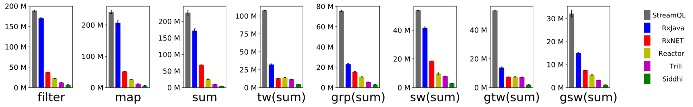
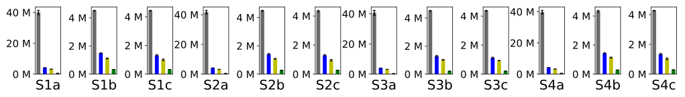
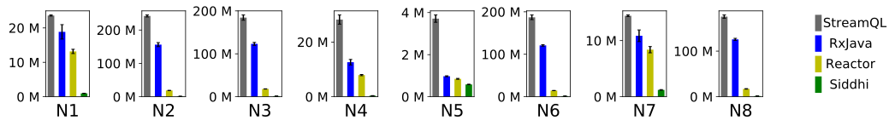
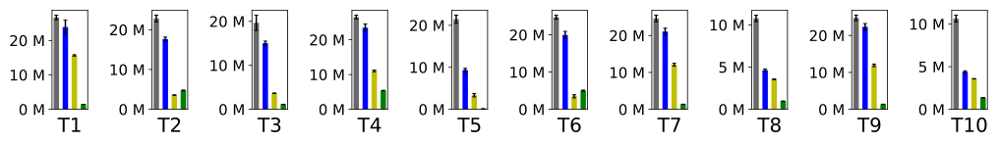

|
StreamQL: A Query Language for Efficient Data Stream Processing
Recent technological advances, such as the Internet of Things (IoT), are causing an enormous proliferation of streaming data, i.e., data that is generated in real-time and at high rates. StreamQL is a query language which simplifies the task of specifying complex computations over streaming data.
The basic object in StreamQL is the stream transformation that describes how an input stream is transformed into an output stream. StreamQL provides a novel integration of several useful programming abstractions for stream processing: (1) relational constructs (such as filtering, mapping, aggregating, key-based partitioning, and windowing), (2) dataflow constructs (such as streaming/serial and parallel composition), and (3) temporal constructs that are inspired from Temporal Logic and regular expressions. StreamQL allows the programmer to specify a streaming analysis in a modular fashion, as its language constructs compose freely.
We provide a formal denotational semantics for StreamQL using a class of monotone functions over streams. We have implemented StreamQL as a lightweight Java library, which we use to experimentally evaluate our approach. The experiments show that the throughput of our implementation is competitive compared to state-of-the-art streaming engines including RxJava, Reactor, Siddhi, Rx.NET, and Trill.
The following diagram shows the performance of StreamQL, RxJava, Rx.NET, Reactor, Trill and Siddhi on the micro benchmark. The vertical axis shows the throughput in number of tuples per second.

The following diagram shows the performance of StreamQL, RxJava, Reactor and Siddhi concerning realistic workloads -- detecting stock patterns (S1a-S4c), monitoring an online auction system (N1-N8), and analyzing a high-frequency trading market (T1-10). The vertical axis shows the throughput in number of tuples per second.



The experiments were run in Ubuntu 16.04 LTS on a desktop computer equipped with an Intel Xeon(R) E3-1241 v3 CPU (4 cores) with 16 GB of memory (DDR3 at 1600 MHz).
|